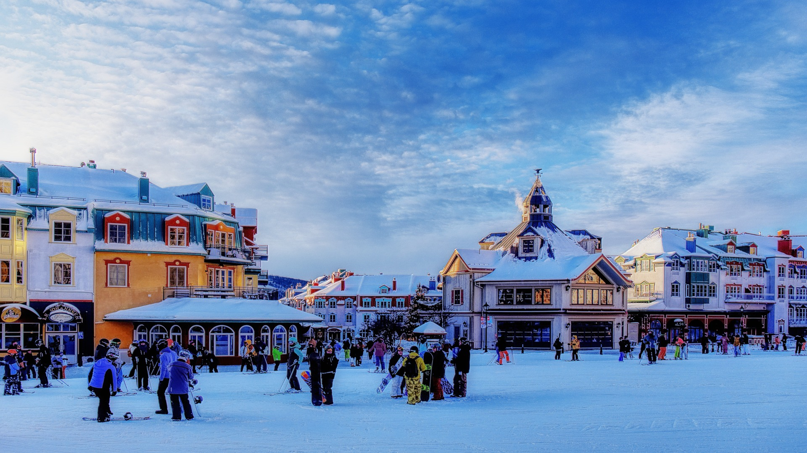

Chase the snow. Discover the unexpected. From snowboarding and skiing to hidden winter destinations, Climb heights and discovers breathtaking views of the snow covered peaks. Glacier Heights is all about unforgettable adventures.
Winter Destinations
Europe
A winter escape worth discovering

Snowy mountains in Bansko, Bulgaria
Explore the snowy mountains of Bulgaria, take on exciting ski slopes and enjoy everything this beautiful winter destination has to offer. There's plenty to discover, whether you're skiing, snowboarding or simply enjoying the views!
Asia
Discover hidden gems of Central Asia.

Shymbulak ski resort in Almaty, Kazakhstan
Experience the beauty of Kazakhstan's mountains at Shymbulak. Enjoy the snowy slopes, take in the incredible views and make the most of everything this winter destination has to offer.
North America
Exploring with no limits.

Snowy village in Mont-Tremblant, Quebec, Canada
Discover the charm of Mont-Tremblant, from its beautiful snowy village to its exciting ski slopes. Whether you're hitting the slopes or exploring the mountain scenery, there's something for everyone to enjoy.
South America
Explore beyond the ordinary.
.jpg)
Cordillera Blanca, Huaraz, Peru
Discover the stunning mountains of Peru's Cordillera Blanca. From snow-covered peaks to beautiful glacial lakes, it's a wonderful place to explore, take in the scenery and experience the Andes mountains.